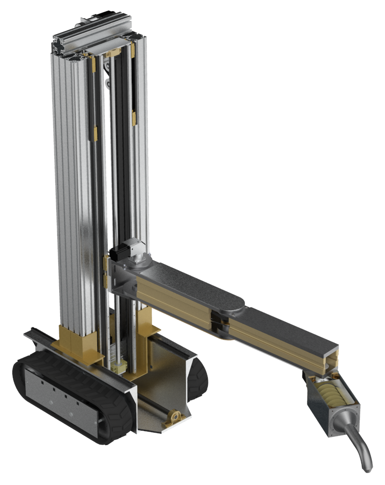

BF-003拖动旋转
逐层偏转的薄片围绕中轴向上生长，形成连续旋动的雕塑剪影。
- 尺寸
- 1200 × 1200 × 3200 mm
- 材料
- 高流变打印砂浆
- 层高
- 12 mm
- 耗时
- 7h 10m
逐层偏转的薄片围绕中轴向上生长，形成连续旋动的雕塑剪影。
面向建筑打印机器人的装饰构件、纹样浮雕、景观装置与艺术雕塑
换一个关键词，或清除分类与收藏筛选。
演示模型提供可下载 STL 与建议参数；正式打印前仍需完成切片、路径校核与材料试验。
AITEBOT LAB / ZH-01
这个模型库不是通用 3D 素材站。每一件作品都以筑墙智匠的打印尺度为边界，将表面肌理、层积曲线和雕塑体量转化为可打印的装饰表达。
完成室内移动和打印模块水平定位。
调节喷头作业高度并保持运行稳定。
调节打印姿态，保持混凝土连续出料。

两级同步升降 机械臂连续打印 履带移动定位社区负责拓展可能，机器人负责把数字几何变成实体建造。
确认装饰构件、浮雕、装置或雕塑的尺寸与打印边界。
检查层高、线宽、材料与连续打印路径。
沿校核后的路径逐层完成实体打印。
资料来源：《高层建筑隔断墙 3D 打印机器人的设计》项目方案。本站用于模型社区与离线展会演示，不直接控制设备。